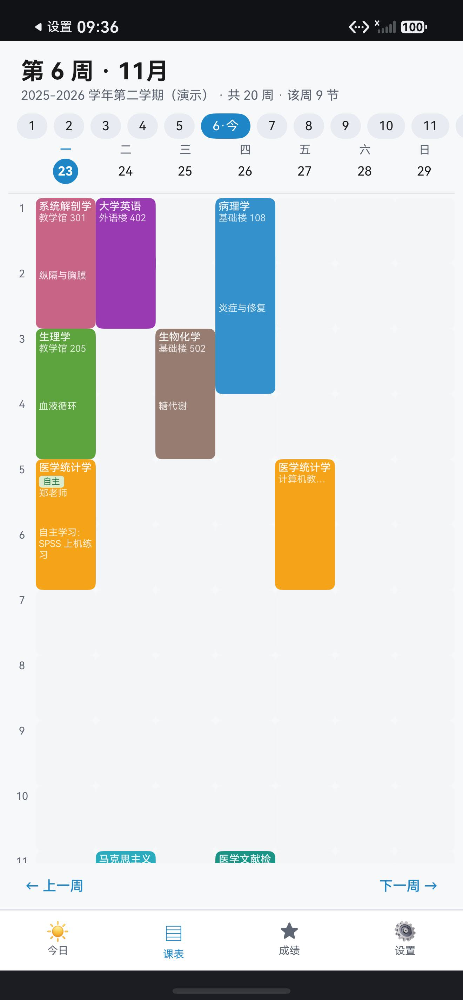
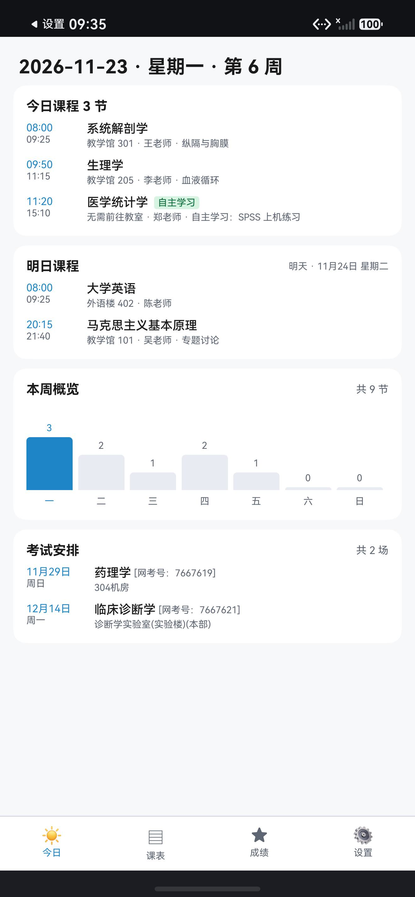

| 应用名称 | 南医大口袋 |
| 应用包名 | com.smu.pocket |
| APP ID | 6917621852714052169 |
| 申请场景 | 计时器（TIMER） |
| 应用类型 | HarmonyOS 应用 · 手机 |
| 文档版本 | v1.0 |
「南医大口袋」是面向高校学生的课程表与成绩查询应用， 数据直连学校教务系统，不经过第三方服务器。核心功能包括今日课程、 每周课表、成绩查询与桌面卡片。用户为在读学生，日常高频使用场景是 确认当天课表、按时赶到教室。
目前应用已上线桌面服务卡片（Form），可在桌面常驻显示今明两天课程。 但桌面卡片只能在用户主动回到桌面时被看到， 无法在「即将上课」这一关键时间点主动提醒，因此申请接入实况窗。
本场景对应实况窗白名单中的 计时器 类型。逐条对应官方准入原则：
| 准入原则 | 本场景的符合情况 |
|---|---|
| 用户高度关注 | 上课时间是学生每天必须确认的信息。迟到会直接影响课堂考勤与学习进度， 用户对「还有多久上课」有明确的实时需求。 |
| 有明确开始与结束时间 | 每节课有教务系统给定的精确起止时间（如 08:00–08:40）。 实况窗在开课前 N 分钟创建，在上课时刻结束， 生命周期边界清晰，单次时长通常为 5–30 分钟，远低于 8 小时上限。 |
| 用户预期明确 | 实况窗由用户主动在设置页开启「开课前提醒」开关触发， 非被动推送，用户对提醒有明确预期。 |
| 非营销非广告 | 仅展示用户本人课表的课程名称、上课时间、教室与倒计时， 无任何商业推广、广告或营销内容。 |
| 状态可实时更新 | 倒计时每秒递减，通过 timer.isCountdown 由系统驱动刷新，
无需应用频繁唤醒。 |
用户在应用「设置」页开启「开课前实况窗提醒」后，可选择提前量： 5 / 10 / 15 / 30 分钟（默认 15 分钟）。 到达设定的提前时刻，应用创建实况窗；上课时刻到达时结束并归档。
| 节点 | 触发条件 | 实况窗展示内容 |
|---|---|---|
| ① 创建 | 当前时间 = 上课时间 − N 分钟 | 标题为课程名，副标题为上课时间与教室，进度条处于起始位置 |
| ② 倒计时 | 创建后持续进行 | 胶囊显示「N 分钟后上课」，卡片内倒计时与实际剩余时间同步递减 |
| ③ 上课 | 当前时间 ≥ 上课时间 | 倒计时归零，进度条走满，实况窗状态转为「已开始上课」 |
| ④ 归档 | 结束后保留 30 秒 | 在通知栏短暂保留，用户仍可点击回顾本节课程信息后自动消失 |
胶囊使用计时器类型（CAPSULE_TYPE_TIMER），左侧为应用图标， 中间文案为「N 分钟后上课」，每秒自动递减。
卡片采用进度可视化模板（LAYOUT_TYPE_PROGRESS）： 顶部为课程名，第二行为上课时间与教室， 下方进度条随倒计时推进，直观表达「距上课的进度」。


实况窗展示的课程名、时间、教室均取自本页已缓存的课表数据， 用户一次登录后即使离线也能正常触发提醒。
实况窗将在状态栏胶囊、通知中心、锁屏三处展示， 用户无需打开应用即可确认下一节课的时间与地点。
| 项目 | 实现方式 |
|---|---|
| 接入方式 | 端侧本地创建（Live View Kit liveViewManager），
不依赖 Push Kit 远程下发 |
| 场景类型 | event: 'TIMER' |
| 卡片模板 | LAYOUT_TYPE_PROGRESS（进度可视化），含进度条与节点图标 |
| 胶囊模板 | CAPSULE_TYPE_TIMER（计时器胶囊） |
| 倒计时驱动 | timer: { time: 剩余毫秒, isCountdown: true }，
由系统每秒钟刷新，应用无需后台常驻 |
| 点击行为 | 通过 clickAction（WantAgent）跳转回应用课表页 |
| 数据来源 | 用户已登录并缓存的整学期课表，本地计算下一节课时间， 不涉及任何联网 |
| 隐私 | 仅展示课程名、时间、教室； 不展示成绩、学号、姓名等个人敏感信息 |
stopLiveView 结束全部实况窗